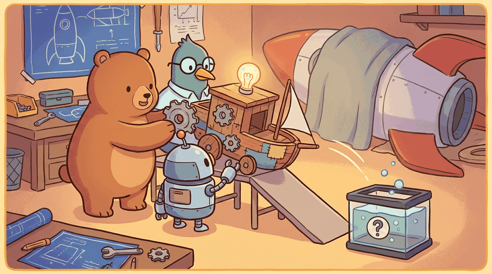

An MVP for an AI product is not the same as for deterministic software. The smallest thing that proves your hypothesis has to include a minimum viable eval, a clear quality bar, and an honest answer for what happens when the model is wrong. This chapter shows you how to scope and ship that smallest thing.
The canonical LLM MVP-to-product trajectory is Cursor, which went from a 2023 launch to roughly \$400M ARR by 2025 by anchoring on a single high-value workflow (code editing) before broadening. The MVP-with-eval template is Khan Academy's Khanmigo (2023 launch), a GPT-4-powered tutor scoped to specific subjects and instrumented with quality measurements from day one rather than retrofitted after rollout.
Sections in This Chapter
- 67.1 Building the MVP The 80/20 cuts, the vertical-slice pattern, the smallest thing that proves the hypothesis, the internal pilot before public launch, and when to keep building versus pivot.
- 67.2 The Vertical-Slice Pattern in Depth Why end-to-end thin slices beat horizontal scope, the five-layer template for an LLM MVP slice, and named cases from 2025-2026 product teams.
- 67.3 Pilot Triggers: Keep, Pivot, or Kill The decision signals after an internal MVP pilot, pre-committed kill criteria, and the sunk-cost traps that produce zombie LLM products.
What Comes Next
In the next section, Section 67.1: Building the MVP, we get to work on the chapter's first concrete topic. After this chapter you continue to Chapter 66: From Idea to Product Hypothesis.